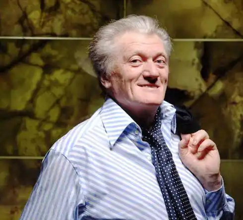
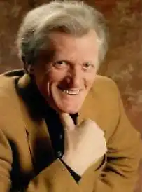

Рибчинський Юрій народився 22 травня 1945 року в Києві, у старовинному районі міста — Подолі.
У 1967 році закінчив Київський державний університет імені Т. Шевченка. З 1970 року на творчій роботі.
Позаштатний радник президента України з питань культури (квітень 1997 — січень 2000). У березні 1998 року балотувався в народні депутати України від СДПУ(О), № 39 в списку. Син Юрія Рибчинського — Євген — поет, продюсер, автор пісень, політичний діяч. Серйозно поезією він захопився в 1960-ті роки. То був період високого піднесення й розквіту літературного жанру. Навчаючись у Київському державному університеті, Рибчинський друкує свої поезії в періодичних виданнях. Коли Юрію було вісімнадцять років, його твори з'явилися в популярному журналі "Юність" та газеті "Комсомольская правда". Відтоді ім'я Ю. Рибчинського стало відомим далеко за межами України. З роками зростали популярність й авторитет Ю. Рибчинського, розширювалося коло композиторів, з якими він працював. Автор текстів до пісень композиторів: Володимира Івасюка ("Кленовий вогонь", "У долі своя весна"), Ігоря Поклада ("Осіння пісня", "Дикі гуси", "Чарівна скрипка", "Тече вода", "Зелен-клен"), Ігоря Шамо ("Три поради"), Миколи Мозгового ("Минає день", "Знов я у гори йду"), Геннадія Татарченка ("Віват, король…"), Павла Зіброва ("Хрещатик"). Загалом на пісні покладено понад 150 віршів Рибчинського. Його пісні в різні часи виконували: Ніна Матвієнко, Ярослав Євдокимов, Назарій Яремчук, Василь Зінкевич, Софія Ротару, Анісімови Любов і Віктор, Таїсія Повалій, Йосип Кобзон, Наталія Бучинська, Наталія Могилевська, Мозговий Микола, Руслана Лижичко, Павло Зібров, Тамара Гвердцителі, Валерій Леонтьєв, Олександр Малінін, Володимир Мулявін, Лоліта Мілявська, та інші. Поета по праву називають одним з основоположників української естрадної пісні. Юрій Рибчинський пише для "зірок", але також наділений талантом відкривати нові імена. Автор лібрето "Пізня середа" (1975), "Товариш Любов" (1977), "Брехуха" (1976), рок-опери "Біла ворона. Жанна д'Арк" (1991), опери "Біла ґвардія". У 2007 відбулася прем'єра рок-опери "Парфумер", лібрето до якої написав Юрій Рибчинський